4.4 人员管理
单击【人事】 【人员】，进入人员页面。
【人员】，进入人员页面。
用户开始使用本管理系统时，需要在系统中登记人员，或者通过导入的方式，将其他软件或资料中的人员信息导入到本系统，具体操作请参见附录1 常用操作中的4. 导入。
4.4.1 新增人员
1、点击【人事】 【人员】
【人员】 【新增】，进入新增人员页面：
【新增】，进入新增人员页面：
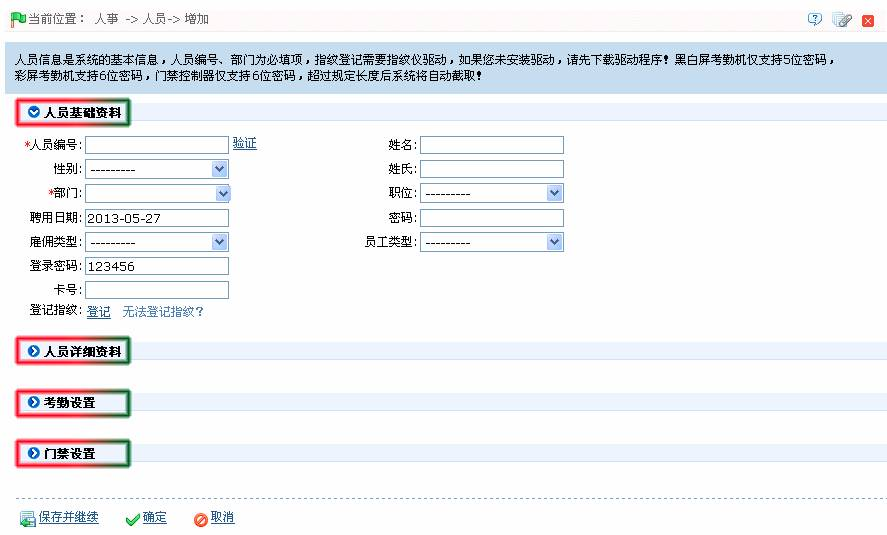
根据需要设置各项参数，具体设置方法如下：
 人员基础资料设置
人员基础资料设置
人员编号：系统默认长度不能超过9位，长度不足9位的工号，自动在前面以0补齐9位；如果用户需要使用更长的编号，可以在安装目录下找到units\adms\attsite.ini文件，打开后找到PIN_WIDTH=9，将9改成其他的数字（不大于16位且不超过设备支持的最大位数）。例如门禁控制器最多支持9位码，所以设置时不能超过9位。编号不能重复，点击【验证】确定是否重复。
部门：单击 按钮，在弹出的部门下拉框中选择部门。（如之前未进行部门设置，则只能选择系统默认存在的部门。）
按钮，在弹出的部门下拉框中选择部门。（如之前未进行部门设置，则只能选择系统默认存在的部门。）
身份证号码：不能重复，可以点击【验证】确定是否重复，支持15位和18位身份证号码。
登记指纹：登记人员指纹。还可登记胁迫指纹，供门禁系统使用，如果人员按胁迫指纹，则会触发报警信号传送到系统。具体操作请参见4.4.2 人员信息维护中的登记指纹。
 注意：如果系统中尚未安装指纹仪驱动，则点击“登记指纹”，会提示下载、安装指纹仪驱动程序。
注意：如果系统中尚未安装指纹仪驱动，则点击“登记指纹”，会提示下载、安装指纹仪驱动程序。
卡号：为人员分配卡号，以供门禁、消费或考勤使用，可以手工录入或使用发卡器发卡。
密码：设置人员密码，门禁控制器仅支持6位密码，黑白屏考勤机仅支持5位密码，彩屏考勤机支持8位密码，超过规定长度后系统将自动截取，修改密码时请先清空文本框中原有密码，再输入新密码。
聘用日期：默认为当前日期。
登录密码：初始状态下为123456，为员工登录员工自助系统的密码，可修改。
雇佣类型：单击 按钮，在弹出的下拉框中选择雇佣类型，可选择为“合同内”或“合同外”。
按钮，在弹出的下拉框中选择雇佣类型，可选择为“合同内”或“合同外”。
员工类型：单击 按钮，在弹出的下拉框中选择员工类型，可选择为“正式员工”或“试用员工”。
按钮，在弹出的下拉框中选择员工类型，可选择为“正式员工”或“试用员工”。
职位：单击按钮，在弹出的下拉框中选择职位。
姓名、性别、姓氏：根据实际情况进行选择与设置。
 人员详细资料设置
人员详细资料设置
单击文字（人员详细资料设置），展开人员详细资料设置栏，如下图所示：
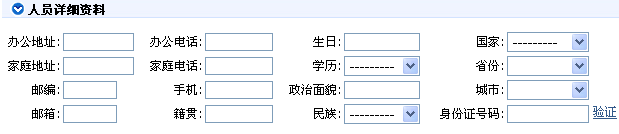
根据需要设置人员详细资料栏内的各参数。
 考勤设置
考勤设置
单击文字（考勤设置），展开考勤设置栏，如下图所示：
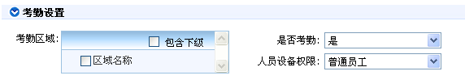
选择考勤区域（如不选择则默认区域为总部）和是否考勤（默认设为“是”，设为“否”则在考勤统计结果中不计算此人员）；对于某些高层管理人员或临时人员如不需考勤时，可以在此设置为“否”。
 备注：考勤区域设置，请参见5.1 区域设置。
备注：考勤区域设置，请参见5.1 区域设置。
人员设备权限：设置该用户在设备中的权限是普通用户、登记员、系统管理员维护或超级管理员。
 门禁设置
门禁设置
单击文字（门禁设置），展开门禁设置栏，如下图所示：
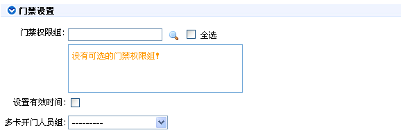
选择门禁权限组、设置有效时间的启用和结束日期、多卡开门人员组（需要预先设定，详情请参见6.3.3 多卡开门）。
其中，设置有效时间：是为了针对临时门禁的设置，即只在有效时间内能够开门。如不勾选则设置为始终有效。
 备注：门禁权限组设置，请参见6.4 门禁权限组。
备注：门禁权限组设置，请参见6.4 门禁权限组。
2、设置完成后，点击【确定】保存（若需继续添加人员，则单击【保存并继续】），并返回人员页面，此时人员列表中将显示刚新增的人员信息。
 注意：人员无论是离职还是在职，都必须保证编号的唯一性，系统进行验证时会自动去离职库进行编号查询。
注意：人员无论是离职还是在职，都必须保证编号的唯一性，系统进行验证时会自动去离职库进行编号查询。
 备注：人员信息列表默认为列表显示，可以选择照片显示，则显示照片和编号，鼠标放在某个人员照片上，会显示该人员详细信息。如下图所示：
备注：人员信息列表默认为列表显示，可以选择照片显示，则显示照片和编号，鼠标放在某个人员照片上，会显示该人员详细信息。如下图所示：
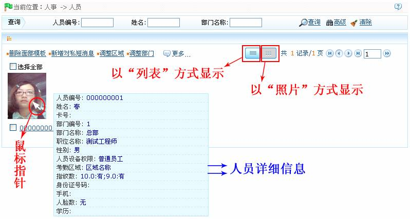
4.4.2 人员信息维护
包括登记指纹、同步人员到设备、设置用户照片和新增对私短消息等操作。
这些功能均可直接点击人员列表下的人员编号，进入编辑界面进行修改，或者点击“相关操作”项目下的【编辑】按钮，进入编辑界面进行修改。修改完成后，点击【确定】保存并退出编辑。
1、登记指纹
（1）、在人员页面的人员列表中，单击选中需登记指纹的人员，然后单击【更多】按钮，弹出如下图所示下拉菜单：

（2）、单击下拉菜单中的“登记指纹”菜单，进入如下图所示的登记指纹页面：
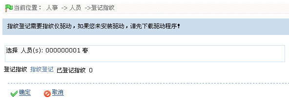
若用户已登记过指纹，则在“已登记指纹”后会显示登记指纹数量。（为“0”代表没有登记指纹。）
（3）、单击【指纹登记】按钮，弹出指纹登记窗口：
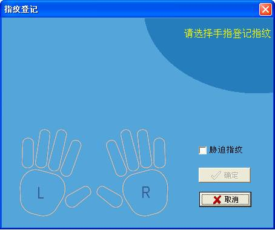
（4）、单击手指图标，选择需登记指纹的手指（被选中的手指的颜色为“黄色”）：
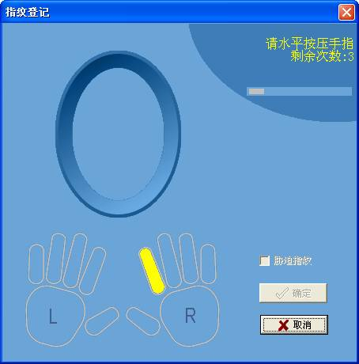
 注意：如需登记胁迫指纹，在登记时勾选【胁迫指纹】即可。
注意：如需登记胁迫指纹，在登记时勾选【胁迫指纹】即可。
（5）、根据窗口提示在指纹仪上，以正确的按压方式连续按压三次手指，指纹登记成功后，窗口提示“指纹登记成功”（此时手指的颜色显示为“绿色”）：
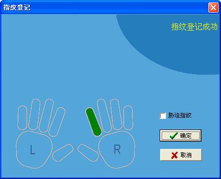
（6）、点击【确定】按钮保存并关闭指纹登记窗口。此时登记指纹页面的“已登记指纹数”显示登记指纹数量为1，即指纹登记成功。如下图所示：
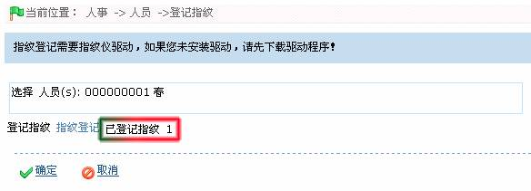
 备注：若需删除已登记的指纹，则在指纹登记窗口中，点击该指纹，弹出删除确认框，单击【Yes】按钮确认，并删除被选中的指纹。
备注：若需删除已登记的指纹，则在指纹登记窗口中，点击该指纹，弹出删除确认框，单击【Yes】按钮确认，并删除被选中的指纹。
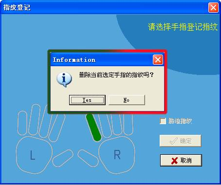
（7）、单击登记指纹页面上的【确定】按钮保存，并返回人员页面。
2、设置用户照片
（1）、在人员页面的人员列表中，单击选中需上传照片的人员，然后单击【更多】按钮，弹出如下图所示下拉菜单：
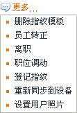
（2）、单击下拉菜单中的“设置用户照片”菜单，进入如下图所示的设置用户照片页面：

（3）、单击【浏览】按钮，在弹出的“选择文件”窗口中，选择需上传的照片，并返回设置用户照片页面，此时“选择个人照片”后，将显示照片地址，如下图所示：
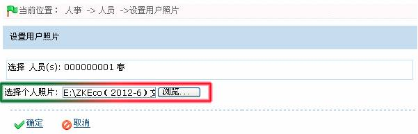
 注意：人员照片大小不能超过16KB。
注意：人员照片大小不能超过16KB。
（4）、单击【确定】按钮，保存并返回人员页面。单击以“照片”形式显示，可查看已设置的用户照片，如下图所示：
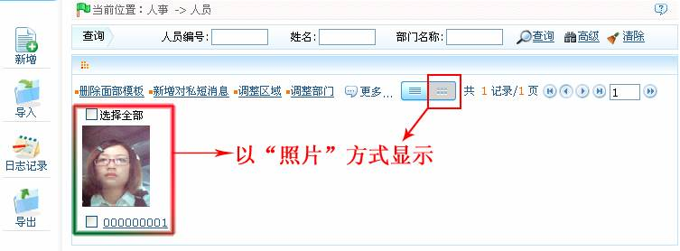
3、重新同步到设备（同步人员到设备）
在人员列表中，选中人员（可多选），然后点击【更多】 【重新同步到设备】，进入同步人员信息的确认页面；单击【确定】按钮确认，并将并选中的人员信息同步到该人员所属区域的所有设备中。
【重新同步到设备】，进入同步人员信息的确认页面；单击【确定】按钮确认，并将并选中的人员信息同步到该人员所属区域的所有设备中。
4、删除指纹模板
在人员列表中，选中人员，单击【更多】 【删除指纹模板】，进入删除指纹模板的确认页面，单击【确定】按钮确认并发送删除指纹模板的请求至设备，待设备连接至服务器时，即响应该条请求，完成删除指纹模板操作。
【删除指纹模板】，进入删除指纹模板的确认页面，单击【确定】按钮确认并发送删除指纹模板的请求至设备，待设备连接至服务器时，即响应该条请求，完成删除指纹模板操作。
5、删除面部模板
在人员列表中，选中人员，单击【删除面部模板】，进入删除面部模板的确认页面，单击【确定】按钮确认并发送删除面部模板的请求至设备，待设备连接至服务器时，即响应该条请求，完成删除面部模板操作。
6、新增对私短消息
（1）、在人员页面中，选中人员（可多选），点击【新增对私短消息】，进入新增对私短消息页面，具体操作方法如下：
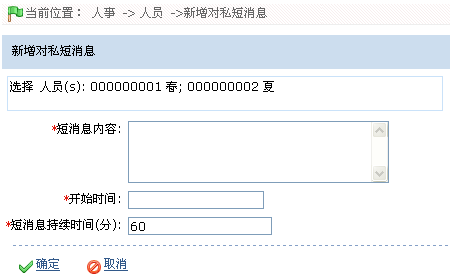
短消息内容：输入短消息内容。
开始时间：设置短消息的开始时间。
短消息的持续时间：设置短消息持续显示的时间。
 注意：设置开始时间与短消息持续时间时，须考虑该人员的可能打卡（考勤）时间，确保该人员能查看到该短消息。
注意：设置开始时间与短消息持续时间时，须考虑该人员的可能打卡（考勤）时间，确保该人员能查看到该短消息。
（2）、设置完成后，单击【确定】保存，该条短消息将在设备短消息页面中显示；单击【取消】则放弃操作。
单击【设备】 【设备短消息】，进入设备短消息页面，此时页面将显示该条短消息，如下图所示：
【设备短消息】，进入设备短消息页面，此时页面将显示该条短消息，如下图所示：
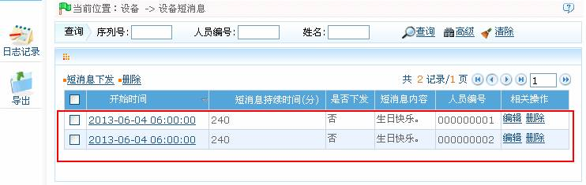
 备注：需将短消息下发到设备中，用户方能在设备查看该短消息。具体操作请参见5.4.1短消息下发。
备注：需将短消息下发到设备中，用户方能在设备查看该短消息。具体操作请参见5.4.1短消息下发。
4.4.3人员调整
人员调整即对现有人员进行日常的维护，主要包括：人员调动（调整部门、职务调动、员工转正、调整区域）、离职、、删除人员等。
1、人员调动
包括调整部门、职位调动、员工转正和调整区域。
此处调整部门为例，操作步骤如下所示：
（1）、在人员页面的人员列表中，选择人员，单击【更多】 【调整部门】，进入调整部门页面，如下所示：
【调整部门】，进入调整部门页面，如下所示：
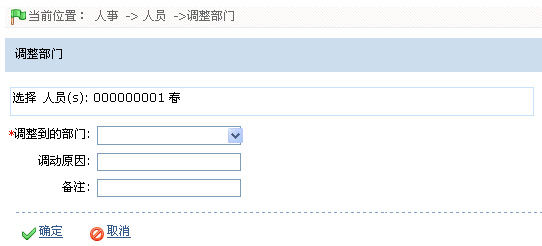
（2）、单击“调整到的部门”后的 按钮，在弹出的部门下拉列表中选择需调整到的部门，并根据需要输入“调动原因”和“备注”信息。
按钮，在弹出的部门下拉列表中选择需调整到的部门，并根据需要输入“调动原因”和“备注”信息。
（3）、设置完成后，单击【确定】按钮，保存并返回人员页面。
 备注：调整区域、员工转正和职位调动的操作同调整部门一致，此处不再重述。
备注：调整区域、员工转正和职位调动的操作同调整部门一致，此处不再重述。
2、人员离职
在人员页面，选中需离职的人员，单击【更多】 【离职】，进入人员离职页面，具体操作同4.5 人员离职一致，此处不再重述。
【离职】，进入人员离职页面，具体操作同4.5 人员离职一致，此处不再重述。
3、删除人员
在人员页面，选中需删除人员，单击【更多】 【删除】；或者直接点击该人员所在行的“相关操作”下的【删除】按钮，进入删除确认页面，点击【确定】完成删除操作。
【删除】；或者直接点击该人员所在行的“相关操作”下的【删除】按钮，进入删除确认页面，点击【确定】完成删除操作。
 注意：删除人员的同时也删除该人员的数据库。
注意：删除人员的同时也删除该人员的数据库。